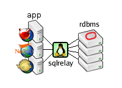

Proxying provides access to databases from unsupported platforms.
Oracle, for example, doesn't support FreeBSD, NetBSD or OpenBSD but by running the SQL Relay server components on a supported platform such as Linux and the SQL Relay client components on the BSD platform, the BSD machine can access the Oracle database.
The SQL Relay client components can be built and run on most unix-like systems, independent of architecture, thus SQL Relay can provide access to databases from a wide variety of platforms not supported by the database vendor.